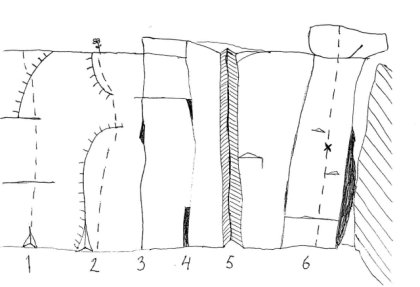
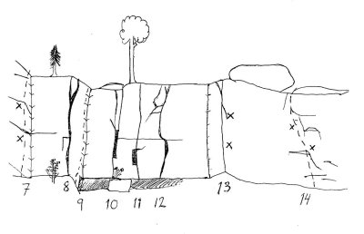
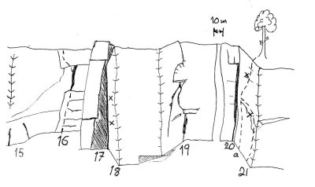
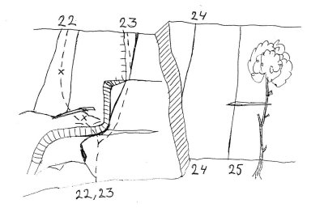
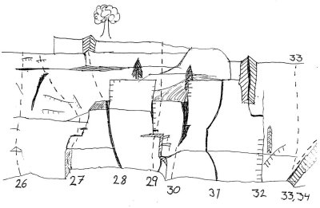
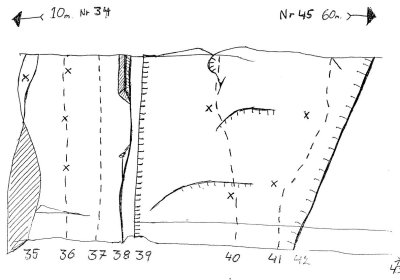
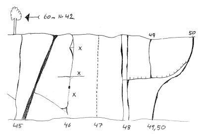

Deje
GPS: 59.637385,13.510180
Allmänt
Gårdsberget är uppskattningsvis 6-12 meter hög och hundra(?) meter bred. Det finns ett 50-tal leder med sport och tradturer i framförallt de lägre graderna.
Vägbeskrivning
Åk på väg 62 från Karlstad, sväng av mot Deje (ej Östra/Västra Deje). Kör höger i första korsningen där du ser en apelsinkiosk på vänstersidan (du förstår när du ser den). Kör genom samhället och sväng vänster mot Mölnbacka och älven. Kör över älven gör en statuskontroll i nästa korsning. Tittar du åt höger i korsningen bör du se en gammal bogartbutik där man förmodligen kan hyra 'smala sussie' och 'kopps' till ett bra paketpris. På grusplanen framför butiken kan man se spår av sprutat grus från motorburen ungdoms hyss på trimmade zündapps. Tittar du åt vänster bör du se en skola och en barack som utgör Deje Pizzeria. De glada grabbarna bakom disken kommer göra dig mätt och belåten så länge du inte handlar med kort. Om du ser detta sväng höger mot Mölnbacka.
Fortsätt någon kilometer ytterligare på denna väg förbi Nedre Ulleruds hembygdsgård och en återvinningcentral. I en lätt högersväng ser man något som kan vara en bondgård på vänster sida. Nu gäller det att vara beredd. Fortsätt några hundra meter till. Har du sjukt bra syn kanske du ser klippan i skogen upp till vänster. Stanna till vid en liten skogsväg in till vänster. Stanna annars på den lilla fickan längre fram efter kurvan. Följ skogsvägen rakt fram längs den tydligt upptrampade stigen och du hamnar någonstans i början på klippan. Från Karlstad = 3-4 mil och från parkering till klippan = 5 minuter.
Bra att veta
Så här står det beskrivet i den tryckta föraren från 2003.
"Klättringen vid Gårdsberget är mestadels vertikal på kompakt klippa som sällan är högre än 7 meter. Sedan gammalt så upplevs lederna som hårt graderade och till denna utgåva har många leder justerats och stämmer inte överrens med den gamla utgåvan. Det finns många leder med dålig landning och markfallspotential så var noga med säkringarna. Se också upp med en del bultade leder".
Det bör uppmärksammas att många leder fortfarande är föremål för uppgradering. Se graddiskussionerna.
Klätterförslag
Vad ska man då klättra när man kommer hit?
Följ stjärnmarkeringarna i texten nedan, men följande har visat sig hålla klass genom åren. Idel rekommendationer från 2003 års utgåva.
Från vänster till höger.
{|
|- valign="top"
| width="350px" |
Graddiskussioner
Uppmärksamma felgraderade leder här. Diskussioner kan också föras på diskussionssidan
Diskussion:Deje
där förhoppningen är att vi efter kort diskussion kan ändra och hamna i fas och komma ur den nedgraderingsspiral som verkar ha pågått på stället.
Övrigt
Informationen på denna sida är till 99% från föraren som utkom 2003.
Nyligen kompletterades föraren med nya leder från åren 2003-2008 av Mattias Hedberg från Karlstad Klätterklubb.
Dessa finns beskrivna nedan men är i dagsläget inte med på bilderna. Detta kommer ändras så småningom.
Vid parkeringen är myggen grymma och om det inte blåser så kan de vara besvärliga vid klippan också. Glöm inte myggsprejen. 2009 var översvämningsmyggorna i Deje de flesta och elakaste i Värmland och tvingade dejeborna inomhus från juli-september.
Huvudberget




- 1
- Snacka går ju!!
- 5-
- Svårsäkrad kort led vid uppstigningsleden.
- 2
- Men snack så det går!!
- 5-
- Svårsäkrad kort led.
- 3
- Humle och Dumles led
- 4+
- Lite klurig till att börja med.
- 4
- Zodiac
- 7
- Den tunna sprickan under granen, förhängda kilar vid förstabestigningen.
- 6
- Alltid denna Vessla
- 5
- Svårare än den ser ut. Använd bara greppen på väggen.
Följande leder är de första man ser om man anländer via den upptrampade stigen från parkeringen/skogsvägen.
- 7
- Animalen
- 4+
- Kort läckerbit till vänster på aréten. Två bult, men man kan också lägga något eget i slutet. Bör uppgraderas, då den absolut ligger i 5-registret. Se graddiskussion.
- 7a
- Go, go Gadget arm
- 7+(7a)
- Bultraden mellan Animalen och Ettan. Insteg från blocket.
- 8
- Ettan
- 4-
- Mycket fin och välsäkrad sprickklättring inne i hörnet. Dejes finaste led för sin grad. Enda negativa är att när nöjet är som störst, så är man redan uppe.
- 9
- I väntans tider
- 6+(6b+)
- Inbjudande arétklättring som bjuder på teknisk utmaning. Gammal topprepsled. Ankare.
- 10
- Makro
- 5-
- Kräver gott handlag med säkringarna.
- 11
- Mikro
- 6
- Om man inte använder hyllan och stubben vid insteget fås en tämligen desperat och intressant led. Hyfsade säkringar.
- 12
- Petitesser
- 4-
- Ingen speciellt exalterande klättring dock stora och fina handtag.
- 12a
- Näin oravan
- 7-(6c)
- Bultraden mellan Petitesser och Brainstorm. Bitvis intensiv klättring på små lister. Efter 3e bulten är äventyret mer eller mindre slut, vilket är lite synd. Dock finfin dit.
- 13
- Brainstorm
- 6 (6b)
- En led som blir svårare vad det lider. Långa personer har det lite lättare än andra. Sätt gärna en säkring i tvärsprickan innan de två bultarna.
- 14
- Femman
- 5-
- Trevlig klättring lite diagonalt över klippan (se bultplacering). Se graddiskussion.
- 14a
- The Forbidden forest
- 4+
- Det snäva diedret några meter till höger om Femman.
- 14b
- Aragog
- 5
- Variant på The Forbidden Forest. Havvägs upp på The Forbidden Forest traversera vänster med fingrarna i den tunna sprickan. Följ sprickan upp runt blocket där den vidgas till en offwidth.
- 15
- Spettad Fänrik
- 3
- Klättra snett åt höger till kanten och följ den. Namnet kommer från rensningsarbetet då befälet gick hårt åt blocken med spettet.
- 16
- Irrfärder
- 3+
- Trevlig nybörjarled. Den stora sprickan i mitten kräver friends eller stora hexor.
- 17
- Kaminen
- 4
- Säkras med friends, hexor och kilar. Kliv ur kaminen i stämklättring på väggarna 3 meter upp eller böka dig fram hela vägen upp. Svår och bökig.
- 18
- Himlasteget
- 6
- Väggen till höger om kaminen. Fin, smått överhängande listklättring på väggen. Lättare om man använder aréten. 2 borrbult.
- 19
- Kyrkan
- 5+
- En klassiker. Mycket välsäkrad utom sista biten som bjuder på en liten runout och även ledens krux. Backa upp med extra säkring före taket inför eventuella luftfärder.
- 20
- Klassikern
- 4-
- En 70-tals-perversion. Bök och jord med hyfsade säkringar.
- 21
- Vågen
- 6-
- Uppför aréten och via en enfingers balansig travers uppför facet. Direktinstegsprojekt markerat med a.
- 22a
- Laban Seigman
- 7
- Variantinsteg till Parachute, börjar från vänster men med samma utsteg som Parachute.
- 22
- Parachute
- 7/7+
- Samma insteg som Sista sommaren. Ett tungt men välsäkrat tak som forceras med starka nypor och en alldeles uppenbar catch (eller rejält ap-index med 120 cm armar). Därefter följer mantling till hyllan och en teknisk avslutning på det övre facet.
- 23
- Sista sommaren
- 5-
- Börjar nere i gropen. Med underclings och laybacks till höger upp på hyllan. Övre delen något tyngre. Säkras med friends och kilar. Fin, varierad och välsäkrad klättring
- 24
- Tuffa grabbar dansar inte
- 5
- Uppenbar linje i hörnet några meter till höger om Sista sommaren. Dåliga säkringsmöjligheter men ledbar.
- 25
- Och dricker bara whiskey
- 6
- Spricklinjen 2-3 meter till höger om Tuffa grabbar dansar inte. Tillfredställande säkringar, dock bör nog den som provar onsight ha lite överkapacitet.
Basecampväggen

- 26
- Polaroid Mongolid
- 6+(6b)
- Tidigare topprepsled som numera bultats. Kruxet är att klara mantlingen 2 meter förbi den lustiga utbuktningen. Förstabestigarna måste vara rutinerade på mantlingar då graden på kruxet är väl barskt för grad 6. Följande har uttalats om leden... "världens hårdaste 6b". Catch till hyllan ovan enda lösning för vissa. Efter kruxet jämn och fin klättring. se graddiskussion.
- 27
- Allt som inte dödar härdar
- 6-
- En suverän linje säger vissa. En trist sak säger andra. Prova och bedöm. Börja i hörnet under taket och gå via det tydliga tunga spricksystemet (vassa kanter) ovan taket till en mer odefinierad del. Säkringsbar, men se till att första kilen ovan taket sitter bra.
- 28
- Eldorado
- 5+
- En avig spricka som löper upp till vänster och avslutas med jord och hyllor i omgångar. Första säkringen är 3-4 meter upp. slarva inte med den, då konsekvensen blir kännbar.
- 29
- Gynstolen
- 6
- Helt suverän, jämn led om den inte vore så sökt. Insteget är under taket inne i hörnet. Använd bara sprickan som löper till vänster utmed taket och facet till vänster om sprickan. Om man använder den trappstegsliknande utskjutande delen av väggen ovanför taket så är man för långt åt höger och snyltar på "skruvstädets" grepp. Välsäkrad, men till taket 4-5 meter krävs friends.
- 30
- Skruvstädet
- 5
- Två integsvarianter. Endera samma insteg som Gynstolen eller till höger om hörnet. Väljs det förstnämnda får man en riktig gorillaklättring innan man står ovanför taket. Från hyllan ovanför taket steppar man till höger och tar sig via den stora sprickan till toppen. Friends eller stora hexor krävs för övre delen. Väljer man det högre insteget krävs mer teknik och mindre biceps.
- 31
- Min led är inte lik din led
- 7-
- Given linje som börjar i sprickan som letar sig upp åt vänster till stora tvärsprickan. Hit femklättring. Här försvinner sprickorna i en betydligt elakare variant samtidigt som fotstegen blir svårhittade. Kruxet (som sätter graden) är att ta sig till nästa snälla hylla för vidare fin och välsäkrad 5-klättring till toppen. Markfallspotential vid kruxet men en liten bra friend kan placeras långt in i sista bra greppet.
- 32
- Min led
- 5
- Via trevligt spricksystem till ett mindre upphetsande utsteg. Lämna kilarna hemma. Denna led vill matas med kamkilar.
- 33
- En tunn sak
- ??
- Ta ett steg upp på rampen som löper upp till höger men fortsätt sedan rakt upp på facet. tungt och inga säkringar. Endast gjord på topprep.
- 34
- Hotdog
- 4
- Följ rampen upp till hyllan och sedan längs sprickorna till toppen.
Superväggen

- 35
- Bakom flötet
- 4+
- Ligger direkt till vänster om Flatliner. Följ flaket uppåt till hyllan. Klättra sedan till topps via borrbulten.
- 36
- Flatliner
- 7+/8- (7a+/7b)
- Väggklättring precis till höger om lättidentifierade flaket. Flaket får inte användas. Kanske håller 7b dvs samma grad som Cleopatra.
- 37
- Cleopatra
- 8- (7b)
- Väggklättring på extremt tunna lister och med långa sträckningar. Skulptera fingrarna med en pennvässare så kanske de passar. Toppankare.
- 38
- Desperado
- 5+
- Den stora vänstra av sprickorna. Vassa kanter och ihållande tungt. Dock välsäkrad och riktigt fin. Rekommenderas som led för att klättra upp och sätta topp på de tyngre sakerna
- 39
- Supernova
- 7
- Den supertunna sprickan till höger av de två sprickorna. Använd bara den tunna sprickan och fuska inte med hjälp av Desperado. Gå ett par lektioner i jam-teknik och svängdörr innan ledförsök. Seriös onsight. Välsäkrad och riktigt delikat laybackklättring till toppen.
- 40
- Magic Mushroom
- 7- (6c)
- En av bergets finaste. Insteg nedanför första borrbulten. Sträck/catch till den stora listen. Lätt överhängande med relativt långa sträckningar till crimpiga lister. Nya bultar 2008/2009 borgar för fortsatt många bestigningar. Toppankare
- 41
- Speed
- 7 (6c+)
- Väggklättring mellan Magic Mushroom och Crack. Tunna lister.
- 42
- Crack
- 7+
- Den tydliga högerlutande sprickan. Hittar du inte var leden går, så ska du nog inte klättra den då du förmodligen är blind. Riktigt välsäkrad och riktigt tung.
- 43
- Röksvampen
- A3/7?
- Någon meter till höger om Crack går en riktigt tunn aidled där det gäller att tassa försiktigt i stegarna. Leden har klättrats fritt på topprep. En fast copperhead på utsteget.
- 44
- Led 37c
- 5?
- Några meter ytterligare till höger om Crack går en spricka som börjar med ett tak. Osäkrad i början.
Väggen längst till höger

- 45
- Myran
- 5-
- Sönderbruten spricka. Övre delen lite mer desperat och sämre säkrad.
- 46
- Bettan
- 6+/7-
- Balansproblem vid insteget. Litet tvåfingershål leder vidare till tung, tung ihållande klättring.
- 47
- Projekt
- ??
- Verkar riktigt svår.
- 48
- Trasan flyger
- 6
- Två sprickor. Välsäkrat förutom utsteget tillika kruxet. Tung och vanligt med längre flygturer. Standplats att rekommendera.
- 49
- Step by step
- 6
- Sanslöst alternativutsteg till Dosan. Tekniskt.
- 50
- Dosan
- 6
- Den vackra till höger löpande sprickan. En catch innan utsteget. Ljuva fingerjam och fingerlocks. Tung men välsäkrad.
- 51
- Aurora Borealis
- 6
- Det tydliga diedret långt till höger just ovanför en liten platå. Tung och överhängande klättring med fina jam men mindre för fötterna. Delvis offwith. Ännu bara gjord blöt eftersom sommaren 2012 är rätt så regnig...
Väggen nere vid vägen
Topografi saknas för denna vägg. Försök orientera er utifrån beskrivning.
- A
- Smör
- 5-
- Den vänstra av lederna. Följ formationen uppåt höger. Få bra säkringar men ändå lätt och fin.
- B
- Grädde
- 6
- Ihållande klättring med bra säkringar. Jam eller layback.
Aidväggen
Topografi saknas för denna vägg. Detta är i alla fall en aidklippa som finns 200 meter till vänster om huvudväggen.
- X
- Domedagssprickan
- A2+/6+
- Tunn början. Något mer välsäkrat slut. Första fria bestigning Jon Granath.
- Y
- Projekt
- ??
- Aidled med handknackad borrbult på mitten. Lär vara riktigt tunn.
- Z
- ?
- C1
- På högra delen av klippan går en clean aidtur med bra punkter
Kategori:Värmland
Kategori:sport
Kategori:trad
Kategori:mix
Kategori:vertikalt
Copyright (C) Permission is granted to copy, distribute and/or modify this document under the terms of the GNU Free Documentation License, Version 1.3